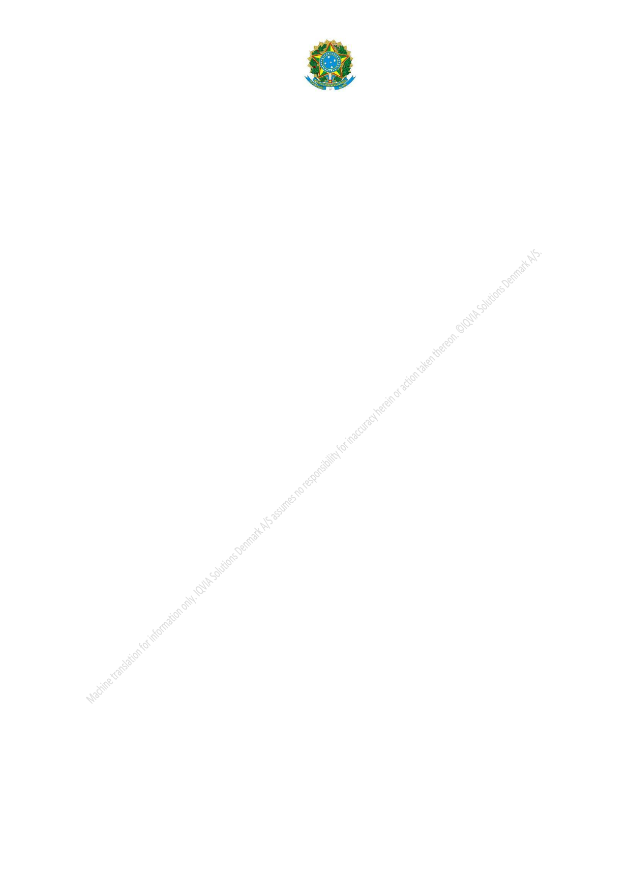

Ministry of Health - MS
National Health Surveillance Agency – ANVISA
XXIV - reusable surgical instrument: an instrument intended to cut, drill,
ripple, sawing, scrape, remove, staple, remove, trim or perform similar procedures in
the context of clinical and surgical interventions, and may or may not connect to an
active device, and intended by the manufacturer to be reused after appropriate
procedures have been carried out, such as cleaning, disinfection and sterilization;
XXV - clinical investigation: any systematic investigation or study in one or
more human beings carried out to assess the safety, clinical performance and/or
efficacy of a medical device. For the purposes of this regulation, this term is
synonymous with "clinical trial" or "clinical research";
XXVI - kit (set, set or tray): set of medical devices that, regardless of whether
they are registered or notified individually, are grouped into a sales unit for a specific
purpose of use or procedure:
a) for the purpose of regularization, the whole shall be of the same
manufacturer or group; and
b) the components of a medical device kit alone do not maintain an
interdependence relationship to achieve the functionality and performance it is
intended for.
XXVII - lot or departure: the quantity of a medical device prepared in a
manufacturing or sterilization cycle, the essential characteristic of which is
homogeneity;
XXVIII - nanomaterial: natural, incidental or manufactured material
containing particles in a non-bound state or in the form of aggregate or agglomerate,
in which 50% or more of the number of particles presents size distribution within the
range of 1 to 100 nm, in one or more of its external dimensions, may include:
a) fulerenos, graphene flakes and single-wall carbon nanotubes with one
or more external dimensions below 1 nm are also considered nanomaterials.
b) manufactured materials with dimensions that extrapolate the upper
limit of the nanoscale (established between 1 and 100 nm), up to the 1000 nm mark,
and that exhibit different size-dependent properties or phenomena from those
presented by the same material in macroscale, may be framed in the definition of
nanomaterial;
XXIX - technical standard: document established by consensus and
approved by a recognized body, which provides for common and repetitive use rules,
guidelines or characteristics for activities or their results, aiming to obtain an optimal
degree of ordering in a given context;
This text does not replace the published in the Official Gazette.